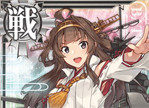
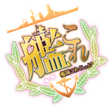

超弩級戦艦として建造技術導入を兼ねて英国ヴィッカース社で建造された、金剛デース！ 太平洋戦域でも持前の高速力を活かして、大活躍デース！ 期待してネ！
《艦隊Collection -艦Colle-》（日語：艦隊これくしょん -艦これ-），一般譯作「艦隊收藏」，是由角川遊戲開發、DMM.com提供及營運的網頁遊戲，簡稱《艦Colle》（艦これ）；DMM表記《艦隊これくしょん 〜艦これ〜》。本遊戲以第二次世界大戰時期的各國軍艦(以大日本帝國海軍為多數)為題材，而遊戲內容為玩家需要收集稱為「艦娘」（艦娘（かんむす））的軍艦萌擬人化角色卡片，為艦娘進行強化及改造同時，並以在戰鬥中打倒敵人作為目標。作為PC瀏覽器運行的網頁遊戲，在營運半年用戶即突破100萬。
擁有音樂CD、Drama CD、四格漫畫、動畫、小說等衍生作品。由於遊戲畫面與對話設計別具特色、對史實的再解釋，成為同人創作與同人作品的熱門素材

玩家（遊戲內艦娘們會稱呼玩家為「提督」或「司令」）為透過收集航空母艦、戰艦、巡洋艦等不同類型的萌擬人化軍艦卡片「艦娘」，並編制不同的艦隊與敵人戰鬥務求獲得勝利。每一位艦娘的插畫及人物設定皆以軍艦的外型及特徵為藍本，而戰鬥時使用的數值，是對應該艦在歷史上於不同海戰中發生的事件及其他要素，簡單地表現出來。艦娘所裝備的主砲等兵器也是以真實存在的兵裝能力數值化後的產物，所以該遊戲作為卡片遊戲的同時，亦是模擬海戰的戰爭遊戲。
玩家可進行的指令，分為出擊、編成（編制）、補給、改裝、入渠及工廠6種。在遊戲開始時可得到1位艦娘及一些資源，增加艦娘數目的方式，除了自行建造（「工廠」內其中一個指令）外，也可以在打倒敵人後拾得其掉下的艦娘。而艦娘的育成，則為在出擊後藉著等級上升來強化，並用以編制強大的艦隊。艦娘的建造與修理，必須使用的物資為燃料、彈藥、鋼材及鋁土礦這4種參數。這些物資會隨時間經過自動增加。玩家亦可以透過遠征（「出擊」內其中一個指令）來增加所擁有的物資。
玩家被指派進行任務（探索）後，在滿足完成任務的條件時會獲得種種物資作為獎賞，亦有可能取得強力的艦娘，或者增加1個能擁有的艦隊等特典。
艦娘本身均設有耐久度，輕微損毀時會在其圖標上噴出黑煙，而在中度損毀或以上的狀態其插畫會出現變化。耐久度降至0時即被判定為「擊沉」，在對殘存的艦隊留下遺言後該艦娘將會連同身上全部裝備消失（損失）。沒有任何方法可令被擊沉的艦娘復活，只可以重新訓練同種艦隻作為替代；但若是有安置損害管制道具，則會在該艦娘留下遺言之後發動，可以暫時性迴避一次擊沈所帶來的損失，並使艦娘總血量恢復四分之一（小數點直接捨去），損害管制道具有分基本與高級兩種，高級損管道具作用與基本損管道具相同，但不同的是，會使該艦娘的耐久度、燃料與彈藥全滿，損管道具皆為一次性道具，發動之後會消失，損害管制道具可以透過部分任務或是活動獲得，也可以用現金購買。
敵方艦隊被稱為「深海棲艦」深海棲艦（しんかいせいかん）），是以軍艦與輸送艦等所構成但實質不明的一群怪物。雖然多數怪物的形狀與生物不甚相似，但是戰艦與航空母艦等強力的敵人則變成女性的形態。在期間限定的特別活動（期間限定活動的背景藍圖多為參照史實的大日本帝國參加過的海戰）及部分高難度的場景中登場的「深海棲艦」，會被被賦與「鬼」「姬」「浮遊要塞」等一般艦種有別的特殊名稱，而這些被賦予特殊名稱的深海棲艦也多為參照美軍或同盟國國家的軍事或戰略基地（如北方棲姬代表位於阿留申羣島的荷蘭港及中間棲姬代表中途島）、港口（如港灣棲姬代表達爾文港）、機場（如飛行場姬代表瓜達爾卡納爾島）、或是同盟國各國的戰艦以及航空母艦所設計，也有部分活動的深海棲艦形象參照自史實中在某作戰被擊沉的大日本帝國海軍軍艦及海外軍艦（例如於馬里亞納海戰被擊沉的翔鶴號航空母艦與大鳳號航空母艦、雷伊泰灣海戰被擊沉的扶桑號戰艦及山城號戰艦及北非戰場被盟軍中破的維奇法軍旗艦黎胥留號戰艦），而其登場的場景亦與通常的敵人有所不同。